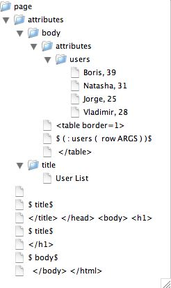

Brought to you by that maniac that brings you ANTLR!
Terence Parr
University of San Francisco
parrt@cs.usfca.edu
Copyright 2003-2005
http://www.stringtemplate.org
(StringTemplate released under BSD License)
Version 2.1, January 22, 2005
Note that the TestStringTemplates.java file has many tests that are an excellent set of examples. Also, I highly recommend you read the (academic-oriented) paper, Enforcing Model-View Separation in Template Engines. There are some more examples including nested menu generation that will be of interest.
Tom Burns (CEO jGuru.com) co-designed StringTemplate and listened to me think out loud incessantly. I would also like to thank Monty Zukowski for planting the template "meme" in my head back in the mid 1990's. Loring Craymer and Monty both are helping me hone these ideas for use in source-to-source language translation. Matthew Ford has done a huge amount of thinking about StringTemplate and has submitted numerous suggestions and patches. Anthony Casalena at http://www.squarespace.com has been a big help beta-testing StringTemplate.
A StringTemplate is a "document" with holes in it where you can
stick values. StringTemplate breaks up your template into chunks of
text and attribute expressions, which are by default enclosed in
dollar signs $attribute-expression$ (to make them easy to see in
HTML files). StringTemplate ignores everything outside of attribute
expressions, treating it as just text to spit out when you call
StringTemplate.toString(). For example, the following template has two chunks, a literal and a reference to attribute name:
Hello, $name$
Using templates in Java code is very easy. Here is the requisite example that prints "Hello, World":
StringTemplate hello = new StringTemplate("Hello, $name$");
hello.setAttribute("name", "World");
System.out.println(hello.toString());
StringTemplate is not a "system" or "engine" or "server"; it's a library with two primary classes of interest: StringTemplate and StringTemplateGroup. You can directly create a StringTemplate in Java code, you can load a template from a file, and you can load a single file with many templates (a template group file).
StringTemplate evolved over years developing the following sites:
The need for dynamically-generated web pages, such as the book description pages at Amazon.com, has led to the development of numerous template engines in an attempt to make web application development easier, improve flexibility, reduce maintenance costs, and allow parallel code and HTML development. These enticing benefits, which have driven the proliferation of template engines, derive entirely from a single principle: separating the specification of a page's business logic and data computations from the specification of how a page displays such information. With separate encapsulated specifications, template engines promote component reuse, pluggable site "looks", single-points-of-change for common components, and high overall system clarity.
StringTemplate distinguishes itself by strictly enforcing the separation of business logic from display. After examining hundreds of template files that I created over years of development, I found that I needed only the following four basic canonical operations:
where template references can be recursive. Things like setting variables, loops, arbitrary method calls into the model etc... are simply unnecessary and lead to entangled specifications.
While StringTemplate evolved while I was building websites, in the back of my mind I kept wondering how useful it would be in my research area (parser generators and other code generators). With the 2.0 release I have augmented StringTemplate to better support text code generators such as auto-indentation and template group files. Along with the group file format, you will see formal arguments for templates so that many previously-undetected errors can be trapped such as referencing an attribute that is not set by the controller.
Here is a simple piece of Java that creates and uses a template on the fly:
StringTemplate query =
new StringTemplate("SELECT $column$ FROM $table$;");
query.setAttribute("column", "name");
query.setAttribute("table", "User");
where StringTemplate considers anything in $...$ to be something
it needs to pay attention to. By setting attributes, you are
"pushing" values into the template for use when the template is
printed out. The attribute values are set by referencing their names.
Invoking query.toString() would yield
SELECT name FROM User;
You can set an attribute multiple times, which simply means that the
attribute is multi-valued. For example, adding another
setAttribute() call makes attribute column multi-valued:
StringTemplate query =
new StringTemplate("SELECT $column$ FROM $table$;");
query.setAttribute("column", "name");
query.setAttribute("column", "email");
query.setAttribute("table", "User");
Invoking query.toString() would now yield
SELECT nameemail FROM User;
Ooops...there is no separator between the multiple values. If you want a comma, say, between the column names, then change the template to record that formatting information:
StringTemplate query =
new StringTemplate("SELECT $column; separator=\",\"$ FROM $table$;");
query.setAttribute("column", "name");
query.setAttribute("column", "email");
query.setAttribute("table", "User");
Note that the right-hand-side of the separator specification in this case is a string literal; therefore, I have escaped the double-quotes as the template is specified in a Java string. In general, the right-hand-side can be any attribute expression. Invoking query.toString() would now yield
SELECT name,email FROM User;
Attributes can be any object at all. StringTemplate calls toString() on each object as it writes the template out. The separator is not used unless the attribute is multi-valued.
To load a template from the disk you must use a StringTemplateGroup
that will manage all the templates you load, caching them so you do
not waste time talking to the disk for each template fetch request
(you can change it to not cache; see below). You may have multiple
template groups. Here is a simple example that loads the previous SQL
template from file /tmp/theQuery.st:
SELECT $column; separator=","$ FROM $table$;
The Java code creates a StringTemplateGroup called myGroup rooted
at /tmp so that requests for template theQuery forces a load of
file /tmp/theQuery.st.
StringTemplateGroup group =
new StringTemplateGroup("myGroup", "/tmp");
StringTemplate query = group.getInstanceOf("theQuery");
query.setAttribute("column", "name");
query.setAttribute("column", "email");
query.setAttribute("table", "User");
If you have a directory hierarchy of templates such as file /tmp/jguru/bullet.st, you would reference them relative to the root; in this case, you would ask for template jguru/bullet().
Note: StringTemplate strips whitespace from the front and back of all loaded template files. You can add, for example, <\n> at the end of the file to get an extra carriage return.
When deploying applications or providing a library for use by other programmers, you will not know where your templates files live specifically on the disk. You will, however, know relative to the classpath where your templates reside. For example, if your code is in package com.mycompany.server you might put your templates in a templates subdirectory of server. If you do not specify an absolute directory with the StringTemplateGroup constructor, future loads via that group will happen relative to the CLASSPATH. For example, to load template file page.st you would do the following:
// Look for templates in CLASSPATH as resources
StringTemplateGroup group = new StringTemplateGroup("mygroup");
StringTemplate st = group.getInstanceOf("com/mycompany/server/templates/page");
If page.st references, say, searchbox template, it must be fully qualified as:
<font size=2>SEARCH</font>: $com/mycompany/server/templates/page/searchbox()$
This is inconvenient and I may add the invoking template's path prefix automatically in the future.
2.0 introduces the notion of a group file that has two main attractions. First, it allows you to define lots of small templates more conveniently because they may all be defined within a single file. Second, you may specify formal template arguments that help StringTemplate detect errors (such as setting unknown attributes) and make the templates easier to read. Here is a sample group file (I'm using <...> delimiters) with two templates, vardef and method, that could be used to generate C files:
group simple;
vardef(type,name) ::= "<type> <name>;"
method(type,name,args) ::= <<
<type> <name>(<args; separator=",">) {
<statements; separator="\n">
}
>>
Single line templates are enclosed in double quotes while multi-line templates are enclosed in double angle-brackets. Every template must define arguments even if the formal argument list if blank.
Using templates in a group file is straightforwards. A StringTemplateGroup constructor accepts a Reader so you can pass in a string or file or whatever:
String templates =
"group simple; vardef(type,name) ..."; // templates from above
StringTemplateGroup group = new StringTemplateGroup(new StringReader(templates));
StringTemplate t = group.getInstanceOf("vardef");
t.setAttribute("type", "int");
t.setAttribute("name", "foo");
System.out.println(t);
The output would be: "int foo;".
When using a group file format to specify templates, you must specify the formal arguments for that template. If you try to set an attribute that is not specifically formally defined that template, you will get a NoSuchElementException.
The first newline following the << in a template definition is
ignored as it is usually used just to get the first line of text for
the template at the start of a line. In other words, if you want to
have a blank line at the start of your template, use:
foo() ::= <<
2nd line is not blank, but first is
>>
or
foo() ::= <<<\n>
same as before; newline then this line
>>
The last newline before the >> is also ignored and is included in
the output. To add a final newline, add an extra line or <\n>
before the >>:
foo() ::= <<
rodent
>>
or
foo() ::= <<
rodent<\n>
>>
Template:
foo() ::= <<
rodent
>>
on the other hand, is identical to
foo() ::= "rodent"
group
: "group" name:ID SEMI (template)*
;
template
: name:ID LPAREN (args)? RPAREN DEFINED_TO_BE TEMPLATE
| ID DEFINED_TO_BE ID // alias one template to be another
;
args: ID (COMMA ID)*
;
| An aside: All along, during my website construction days, I kept in mind that any text output follows a format and, thus, output sentences conform to a language. Consequently, a grammar should describe the output rather than a bunch of ad hoc print statements in code. This helped me formalize the study of templates because I could compare templates (output grammars) to well established ideas from formal language theory and context-free grammars. This allowed me to show, among other things, that StringTemplate can easily generate any document describable with an XML DTD even though it is deliberately limited. The group file format should look very much like a grammar to you. |
See the scoping rules section for information on how formal arguments affect attribute look up.
I use .stg file extension, which you might also want to use.
The most common thing in a template besides plain text is a simple named attribute reference such as:
Your email: $email$
The template will look up the value of email and insert it into the output stream when you ask the template to print itself out. If email has no value, then it evaluates to the empty string and nothing is printed out for that attribute expression.
If a named attribute is an aggregate with a property (ala JavaBeans), you may reference that property using attribute.property. For example:
Your name: $person.name$
Your email: $person.email$
StringTemplate ignores the actual object type stored in attribute person and simply invokes getName() and getEmail() via reflection. As a special case, StringTemplate tries x.isFoo() for x.foo if x is Boolean.
Because the type is ignored, you can pass in whatever existing Java aggregate (class) you have such as User or Person:
User u = database.lookupPerson("parrt@jguru.com");
st.setAttribute("person", u);
Or, if a suitable aggregate doesn't exist, you can make a connector or "glue" object and pass that in instead:
st.setAttribute("person", new Connector());
where Connector is defined as:
public class Connector {
public String getName() { return "Terence"; }
public String getEmail() { return "parrt@jguru.com"; }
}
The ability to reference aggregrate properties saves you the trouble
of having to pull out the properties with Java code like this:
User u = database.lookupPerson("parrt@jguru.com");
st.setAttribute("name", u.getName());
st.setAttribute("email", u.getEmail());
and having template:
Your name: $name$
Your email: $email$
Warning: The latter is more widely applicable and totally decoupled from code and logic; i.e., it's "better" but much less convenient. Be very careful that the property methods do not have any side-effects like updating a counter or whatever. This breaks the rule of order of evaluation independence.
You may pass in instances of type HashMap and Hashtable but cannot
pass in objects implementing the Map because that would allow all
sorts of wacky stuff like database access. Rather than creating an
aggregate object (though I make it easier for you with the automatic
aggregate creation in the next section) you can pass in a HashMap
that has keys referencable within templates. For example,
StringTemplate a = new StringTemplate("$user.name$, $user.phone$");
HashMap user = new HashMap();
user.put("name", "Terence");
user.put("name", "none-of-your-business");
a.setAttribute("user", user);
String results = a.toString();
yields a result of "Terence, none-of-your-business".
While Java anonymous inner classes are supposed to make creating and passing around aggregates easy, it turns out they have a nasty weakness: they are created with protections such that they are not visible outside their package. In other words, if you want to avoid creating a separate class and want to use an anonymous class, StringTemplate will receive an illegal access exception when trying to access the (public) property methods via reflection. It stunned me too, but after hours of frustration, I can only conclude this is inescapable. Anonymous classes are created with non-public access. Anyway, I found a workaround that is better by augmenting StringTemplate slightly. You may pass in an aggregrate attribute name to setAttribute() now:
StringTemplate st =
new StringTemplate("$items:{$it.last$, $it.first$\n}$");
st.setAttribute("items.{first,last}", "John", "Smith");
st.setAttribute("items.{first,last}", "Baron", "Von Munchhausen");
String expecting =
"Smith, John\n" +
"Von Munchhausen, Baron\n";
Note that the template, st, expects the items to be aggregates with properties first and last. By using attribute name
items.{first,last}
You are telling StringTemplate to take the following two arguments as properties first and last.
I have created variants of the setAttribute() method to handle from 2 to 5 properties. This is really handy. :)
You may reference other templates to have them included just like the C language preprocessor #include construct behaves. For example, if you are building a web page (page.st) that has a search box, you might want the search box stored in a separate template file, say, searchbox.st. This has two advantages:
Using method call syntax, just reference the foreign template:
<html>
<body>
...
$searchbox()$
...
</body>
</html>
The invoking Java code would still just create the overall page and the enclosing page template would automatically create an instance of the referenced template and insert it:
StringTemplateGroup group =
new StringTemplateGroup("webpages", "/usr/local/site/templates");
StringTemplate page = group.getInstanceOf("page");
If the template you want to reference, say searchbox, is in a subdirectory of the StringTemplateGroup root directory called misc, then you must reference the template as: misc/searchbox().
The included template may access attributes. How can you set the attribute of an included template? There are two ways: inheriting attributes and passing parameters.
Any included template can reference the attributes of the enclosing template instance. So if searchbox references an attribute called resource:
<form ...>
...
<input type=hidden name=resource value=$resource$>
...
</form>
you could set attribute resource in the enclosing template page:
StringTemplate page = group.getInstanceOf("page");
page.setAttribute("resource", "faqs");
This "inheritance" of attributes feature is particularly handy for setting generally useful attributes like siteFontTag.
Another, more obvious, way to set the attributes of an included template is to pass in values as parameters, making them look like C macro invocations rather than includes. The syntax looks like a set of attribute assignments:
<html>
<body>
...
$searchbox(resource="faqs")$
...
</body>
</html>
where I am setting the attribute of the included searchbox to be the string literal "faqs".
The right-hand-side of the assignment may be any expression such as an attribute reference or even a reference to another template like this:
$boldMe(item=copyrightNotice())$
When setting parameters or testing IF conditionals, you may find it handy to use the plus "string concatenate" operator. For example, when building web pages, you will find it useful to create a template called link and then use it to generate HTML link tags; you may want to change the way every link looks on your site and it's convenient to have one place to change things. The template might look like:
<a href="$url$"><b>$title$</b></a>
Then in a page template you might reference:
...$link(url="http://www.jguru.com", title="jGuru")$...
or you could use attributes to set the link parameters:
...$link(url=person.homePage, title=person.name)$...
Sometimes you may want to compute the URL; usually it is enough to concatenate strings:
...$link(url="/faq/view?ID="+faqid, title=faqtitle)$...
where faqid and faqtitle are attributes you would have to set for the template that referenced link.
You may parenthesize any expression:
...$link(url=("/faq/view?ID="+faqid), title=faqtitle)$...
Imagine a simple template called bold:
<b>$item$</b>
Just as with template link described above, you can reference it from a template by invoking it like a method call:
$bold(item=name)$
What if you want something bold and italicized? You could simply nest the template reference:
$bold(item=italics(item=name))$
where template italics is defined as:
<i>$item$</i>
using a different attribute with the same name, item; the attributes have different values just like you would expect if these template references where Java method calls and item were a local variable. Parameters and attribute references are scoped like a programming language.
Think about what you are really trying to say here. You want to say "make name italics and then make it bold", or "apply italics to the name and then apply bold." There is an "apply template" syntax that is a literal translation:
$name:italics():bold()$
where the templates are applied in the order specified from left to right. This is much more clear, particularly if you had three templates to apply:
$name:courierFont():italics():bold()$
For this syntax to work, however, the applied templates have to reference a standard attribute because you are not setting the attribute in a parameter assignment. In general for syntax expr:template(), an attribute called it is set to the value of expr. So, the definition of bold (and analogously italics), would have to be:
<b>$it$</b>
to pick up the value of name in our examples above.
Where template application really shines though is when an attribute is multi-valued. One of the most common web page generation issues is making lists of items either as bullet lists or table rows etc... Applying a template to a multi-valued attribute means that you want the template applied to each of the values.
Consider a list of names (i.e., you set attribute names multiple times) that you want in a bullet list. If you have a template called listItem:
<li>$it$</li>
then you can do this:
<ul>
$names:listItem()$
</ul>
and each name will appear as a bullet item. For example, if you set names to "Terence", "Tom", and "Jim", then you would see:
<ul>
<li>Terence</li>
<li>Tom</li>
<li>Jim</li>
</ul>
in the output.
Whenever you apply a template to an attribute or multi-valued attribute, the default attribute it is set. Another attribute i (of type Integer) is also set to the value's index number starting from 1. For example, if you wanted to make your own style of numbered list, you could reference i to get the index:
$names:numberedListItem()$
where template numberedListItem is defined as:
$i$. $it$<br>
In this case, the output would be:
1. Terence<br>
2. Tom<br>
3. Jim<br>
If there is only one attribute value, then i will be 1.
The result of applying a template to a multi-valued attribute is another multi-valued attribute containing the results of the application. You may apply another template to the results of the first template application, which comes in handy when you need to format the elements of a list before they go into the list. For example, to bold the elements of a list do the following (given the appropriate template definitions from above):
$names:bold():listItem()$
If you actually want to apply a template to the combined (string) result of a previous template application, enclose the previous application in parenthesis. The parenthesis will force immediate evaluation of the template application, resulting in a string. For example,
$(names:bold()):listItem()$
results in a single list item full of a bunch of bolded names. Without the parenthesis, you get a list of items that are bolded.
When generating lists of things, you often need to change the color or other formatting instructions depending on the list position. For example, you might want to alternate the color of the background for the elements of a list. The easiest and most natural way to specify this is with an alternating list of templates to apply to an expression of the form: $expr:t1(),t2(),...,tN()$. To make an alternating list of blue and green names, you might say:
$names:blueListItem(),greenListItem()$
where presumably blueListItem template is an HTML <table> or something that lets you change background color. names[0] would get blueListItem() applied to it, names[1] would get greenListItem(), and names[2] would get blueListItem(), etc...
If names is single-valued, then blueListItem() is applied and that's it.
Some templates are so simple or so unlikely to be reused that it seems a waste of time making a separate template file and then referencing it. StringTemplate provides anonymous subtemplates to handle this case. The templates are anonymous in the sense that they are not named; they are directly applied in a single instance.
For example, to show a name list do the following:
<ul>
$names:{<li>$it$</li>}$
</ul>
where anything enclosed in curlies is an anonymous subtemplate if, of course, it's within an attribute expression. Note that in the subtemplate, I must enclose the it reference in the template expression delimiters. You have started a new template exactly like the surrounding template and you must distinguish between text and attribute expressions.
You can apply multiple templates very conveniently. Here is the bold list of names again with anonymous templates:
<ul>
$names:{<b>$it$</b>}:{<li>$it$</li>}$
</ul>
The output would look like:
<ul>
<li><b>Terence</b></li>
<li><b>Tom</b></li>
<li><b>Jim</b></li>
</ul>
Anonymous templates work on single-valued attributes as well.
Sometimes the name of the template you would like to include is itself a variable. So, rather than using "<item:format()>" you want the name of the template, format, to be a variable rather than a literal. Just enclose the template name in parenthesis to indicate you want the immediate value of that attribute and then add () like a normal template invocation and you get "<item:(someFormat)()>", which means "look up attribute someFormat and use its value as a template name; appy to item." This deliberately looks similar to the C function call indirection through a function pointer (e.g., "(*fp)()" where fp is a pointer to a function). A better way to look at it though is that the (someFormat) implies immediately evaluate someFormat and use as the template name.
Usually this "variable template" situation occurs when you have a list of items to format and each element may require a different template. Rather than have the controller code create a bunch of instances, one could consider it better to have StringTemplate do the creation--the controller just names what format to use.
Consider generating a list of Java declarations that are initialized to 0, false, null, etc... One solution is to define a template for int, Object, Array, etc... declarations and then pass in an aggregate object that has the variable declaration object and the format. In a template group file you might have:
group Java;
file(variables,methods) ::= <<
<variables:{<it.decl:(it.format)()>}; separator="\n">
<methods>
>>
intdecl() ::= "int <it.name> = 0;"
intarray() ::= "int[] <it.name> = null;"
Your code might look like:
StringTemplateGroup group =
new StringTemplateGroup(new StringReader(templates),
AngleBracketTemplateLexer.class);
StringTemplate f = group.getInstanceOf("file");
f.setAttribute("variables.{decl,format}", new Decl("i","int"), "intdecl");
f.setAttribute("variables.{decl,format}", new Decl("a","int-array"), "intarray");
System.out.println("f="+f);
String expecting = ""+newline+newline;
For this simple unit test, I used the following dummy decl class:
public static class Decl {
String name;
String type;
public Decl(String name, String type) {this.name=name; this.type=type;}
public String getName() {return name;}
public String getType() {return type;}
}
The value of f.toString() is:
int i = 0;
int[] a = null;
Missing attributes (i.e., null valued attributes) used as indirect template attribute generate nothing just like referencing a missing attribute.
There are many situations when you want to conditionally include some text or another template. StringTemplate provides simple IF-statements to let you specify conditional includes. For example, in a dynamic web page you usually want a slightly different look depending on whether or not the viewer is "logged in" or not. Without a conditional include, you would need two templates: page_logged_in and page_logged_out. You can use a single page definition with if(expr) attribute actions instead:
<html>
...
<body>
$if(member)$
$gutter/top_gutter_logged_in()$
$else$
$gutter/top_gutter_logged_out()$
$endif$
...
</body>
</html>
where template top_gutter_logged_in is located in the gutter subdirectory of my StringTemplateGroup.
IF actions test the presence or absence of an attribute unless the object is a Boolean, in which case it tests the attribute for true/false. The only operator allowed is "not" and means either "not present" or "not true". For example, "$if(!member)$...$endif$".
There is a simple, but not perfect rule: kill a single newline after
<if>, <<, <else>, and <endif> (but for <endif> only if it's
on a line by itself) . Kill newlines before <else> and <endif>
and >>. For example,
a <if(foo)>big<else>small<endif> dog
is identical to:
a <if(foo)>
big
<else>
small
<endif>
dog
It is very difficult to get the newline rule to work "properly" because sometimes you want newlines and sometimes you don't. I decided to chew up as many as is reasonable and then let you explicitly say <\n> when you need to.
Sometimes you use or define templates improperly. Either you set an
attribute that is not used or forget to set one or reference the wrong
template etc... I have made a toy visualization tool via that shows
both the attributes and the way StringTemplate breaks up your
template into chunks. It properly handles StringTemplate objects as
attributes and other nested structures. Here is the way to launch a
Swing frame to view your template:
StringTemplate st = ...;
StringTemplateTreeView viz =
new StringTemplateTreeView("sample",st);
viz.setVisible(true);
Here is a snapshot (note that due some weird font thing on my os x box, the first <html> text chunk is missing in the display.) :( The display is associated with the fill-a-table example below.

If you turn on "lint mode" via StringTemplate.setLintMode(true) then you may access attribute attributes, which is a text string that recursively dumps out types, properties, etc... It does not print out their values.
| Syntax | Description |
| <attribute> | Evaluates to the value of attribute.toString() if it exists else empty string. |
| <multi-valued-attribute> | Concatenation of toString() invoked on each element. If multi-valued-attribute is missing this evaluates to the empty string. |
| <multi-valued-attribute; separator=expr> | Concatenation of toString() invoked on each element separated by expr. |
| <template(argument-list)> | Include template. The argument-list is a list of attribute assignments where each assignment is of the form attribute=expr. |
| <(expr)(argument-list)> | Include template whose name is computed via expr. The argument-list is a list of attribute assignments where each assignment is of the form attribute=expr. Example $(titleFont)()$ looks up titleFont's value and uses that as template name. Can also apply an indirect template to an attribute. |
| <attribute:template(argument-list)> | Apply template to attribute. The optional argument-list is evaluated before application so that you can set attributes within template. The default attribute it is set to the value of attribute. Example: $data:bold() applies bold() to data's value. If attribute is multi-valued, then the optional argument-list is evaluated before each application so that you can set attributes within template. Also, the default attribute it is set to the value of each element in turn. |
| <attribute:(expr)(argument-list)> | Apply template, whose name is computed from expr, to attribute. The optional argument-list is evaluated before application so that you can set attributes within template. The default attribute it is set to the value of attribute. Example $data:(name)()$ looks up name's value and uses that as template name to apply to data. |
| <multi-valued-attribute:t1(argument-list): ... :tN(argument-list)> | Apply multiple templates in order from left to right. The result of a template application upon a multi-valued attribute is another multi-valued attribute. The overall expression evaluates to the concatenation of all elements of the final multi-valued attribute resulting from templateN's application. |
| <attribute:{anonymous-template}> | Concatenate the results of applying a template with no name to each element of multi-valued-attribute. |
| <attribute:t1(),t2(),...,tN()> | Apply an alternating list of templates to the elements of attribute. |
| <if(attribute)>subtemplate <else>subtemplate2 <endif> | If attribute has a value or is a true Boolean object, include subtemplate else include subtemplate2. These conditionals may be nested. |
| <if(!attribute)>subtemplate<endif> | If attribute has no value or is a false Boolean object, include subtemplate. These conditionals may be nested. |
| \$ or \< | escaped delimiter prevents $ or < from starting an attribute expression and results in that single character. |
| <\ >, <\n>, <\t>, <\r> | special characters: space, newline, tab, carriage return. |
| <! comment !>, $! comment !$ | Comments, ignored by StringTemplate. |
By default, expressions in a template are delimited by dollar signs: $...$. This works great for the most common case of HTML generation because the attribute expressions are clearly highlighted in the text. Sometimes, with other formats like SQL statement generation, you may want to change the template expression delimiters to avoid a conflict and to make the expressions stand out.
As of 2.0, the start and stop strings are limited to either $...$ or <...> (unless you build your own lexical analyzer to break apart templates into chunks).
To use the angle bracket delimiters you must create a StringTemplateGroup:
StringTemplateGroup group =
new StringTemplateGroup("sqlstuff", "/tmp", AngleBracketTemplateLexer.class);
StringTemplate query =
new StringTemplate(group, "SELECT <column> FROM <table>;");
query.setAttribute("column", "name");
query.setAttribute("table", "User");
All templates created through the group or in anyway associated with the group will assume your the angle bracket delimiters. It's smart to be consistent across all files of similar type such as "all HTML templates use $...$" and "all SQL templates use <...>".
By default templates are loaded from disk just once. During development, however, it is convenient to turn caching off. Also, you may want to turn off caching so that you can quickly update a running site. You can set a simple refresh interval using StringTemplateGroup.setRefreshInterval(...). When the interval is reached, all templates are thrown out. Set interval to 0 to refresh constantly (no caching). Set the interval to a huge number like Integer.MAX_INT to have no refreshing at all.
Recall that a StringTemplateGroup is a collection of related templates such as all templates associated with the look of a web site. If you want to design a similar look for that site (such as for premium users), you don't really want to cut-n-paste the original template files for use in the new look. Changes to the original will not be propogated to the new look.
Just like you would do with a class definition, a template group may inherit templates from another group, the supergroup. If template t is not found in a group, it is looked up in the supergroup, if present. This works regardless of whether you use a group file format or load templates from the disk via a StringTemplateGroup object. Currently you cannot use the group file syntax to specify a supergroup. I am investigating how this should work. In the meantime, you must explicitly set the super.
From my unit tests, here is a simple inheritance of a template, bold:
StringTemplateGroup supergroup = new StringTemplateGroup("super");
StringTemplateGroup subgroup = new StringTemplateGroup("sub");
supergroup.defineTemplate("bold", "<b>$it$</b>");
subgroup.setSuperGroup(supergroup);
StringTemplate st = new StringTemplate(subgroup, "$name:bold()$");
st.setAttribute("name", "Terence");
String expecting = "<b>Terence</b>";
The supergroup has a bold definition but the subgroup does not. Referencing $name:bold()$ works because subgroup looks into its supergroup if it is not found.
You may override templates:
supergroup.defineTemplate("bold", "<b>$it$</b>");
subgroup.defineTemplate("bold", "<strong>$it$</strong>");
And you may refer to a template in a supergroup via super.template():
StringTemplateGroup group = new StringTemplateGroup(...);
StringTemplateGroup subGroup = new StringTemplateGroup(...);
subGroup.setSuperGroup(group);
group.defineTemplate("page", "$font()$:text");
group.defineTemplate("font", "Helvetica");
subGroup.defineTemplate("font", "$super.font()$ and Times");
StringTemplate st = subGroup.getInstanceOf("page");
The string st.toString() results in "Helvetica and Times:text".
Just like object-oriented programming languages, StringTemplate has polymorphism. That is, template names are looked up dynamically relative to the invoking templates group. The classic demonstration of dynamic message sends in Java, for example, would be the following example that catches my students all the time: ;)
class A {
public void page() {bold();}
public void bold() {System.out.println("A.bold");}
}
class B extends A {
public void bold() {System.out.println("B.bold");}
}
...
A a = new B();
a.page();
This prints "B.bold" not "A.bold" because the receiver determines how to answer a message not the type of the variable. So, I have created a B object meaning that any message, such as bold(), invoked will first look in class B for bold().
Similarly, a template's group determines where it starts looking for a template. In this case, both super and sub groups define a bold template mirroring the Java above. Because I create template st as a member of the subGroup and reference to bold starts looking in subGroup even though page is the template referring to bold.
StringTemplateGroup group = new StringTemplateGroup("super");
StringTemplateGroup subGroup = new StringTemplateGroup("sub");
subGroup.setSuperGroup(group);
group.defineTemplate("bold", "<b>$it$</b>");
group.defineTemplate("page", "$name:bold()$");
subGroup.defineTemplate("bold", "<strong>$it$</strong>");
StringTemplate st = subGroup.getInstanceOf("page");
st.setAttribute("name", "Ter");
String expecting = "<strong>Ter</strong>";
When you request a named template via StringTemplateGroup.getInstanceOf() or within a template, there is a specific sequence used to locate the template.
If a template, t, references another template and t is not specifically associated with any group, t is implicitly associated with a default group whose root directory is ".", the current directory. The referenced template will be looked up in the current directory.
If a template t is associated with a group, but was not defined via a group file format, lookup a referenced template in the group's template table. If not there, look for it on the disk under the group's root dir or via the CLASSPATH (it might have appeared dynamically on disk). If not found, recursively look at any supergroup of the group. If not found at all, record this fact and don't look again on the disk until refresh interval.
If the template's associated group was defined via a group file, then that group is searched first. If not found, the template is looked up in any supergroup. The refresh interval is not used for group files because the group file is considered complete and enduring.
A StringTemplate is a list of chunks, text literals and attribute expressions, and an attributes table. To render a template to string, the chunks are written out in order; the expressions are evaluated only when asked to during rendering. Attributes referenced in expressions are looked up using a very specific sequence similar to an inheritance mechanism.
When you nest a template within another, such as when a page template references a searchbox template, the nested template may see any attributes of the enclosing instance or its enclosing instances. This mechanism is called dynamic scoping. Contrast this with lexical scoping used in most programming languages like Java where a method may not see the variables defined in invoking methods. Dynamic scoping is very natural for templates. For example, if page has an attribute/value pair font/Times then searchbox could reference $font$ when nested within a page instance.
Reference to attribute a in template t is resolved as follows:
This process is recursively executed until a is found or there are no more enclosing template instances.
When using a group file format to specify templates, you must specify the formal arguments for that template. If you try to access an attribute that is not formally defined in that template or an enclosing template, you will get a NoSuchElementException.
When building code generators with StringTemplate, large heavily nested template tree structures are commonplace and, due to dynamic attribute scoping, a nested template could inadvertently use an attribute from an enclosing scope. This could lead to infinite recursion during rendering. To prevent this, formal arguments on template t hide any attribute value with that name in any enclosing scope. Here is a test case that illustrates the point.
String templates =
"group test;" +newline+
"block(stats) ::= \"{$stats$}\""
;
StringTemplateGroup group =
new StringTemplateGroup(new StringReader(templates));
StringTemplate b = group.getInstanceOf("block");
b.setAttribute("stats", group.getInstanceOf("block"));
String expecting ="{{}}";
Even though block has a stats value that refers to itself, there is no recursion because each instance of block hides the stats value from above since stats is a formal argument.
Sometimes self-recursive (hence infinitely recursive) structures occur through programming error and they are nasty to track down. If you turn on "lint mode", StringTemplate will attempt to find cases where a template instance is being evaluated during the evaluation of itself. For example, here is a test case that causes and traps infinite recursion.
String templates =
"group test;" +newline+
"block(stats) ::= \"$stats$\"" +
"ifstat(stats) ::= \"IF true then $stats$\"\n"
;
StringTemplate.setLintMode(true);
StringTemplateGroup group =
new StringTemplateGroup(new StringReader(templates));
StringTemplate b = group.getInstanceOf("block");
StringTemplate ifstat = group.getInstanceOf("ifstat");
b.setAttribute("stats", ifstat); // block has if stat
ifstat.setAttribute("stats", b); // but make the "if" contain block
try {
String result = b.toString();
}
catch (IllegalStateException ise) {
...
}
The nested template stack trace from ise.getMessage() will be similar to:
infinite recursion to <ifstat([stats])@4> referenced in <block([stats])@3>; stack trace:
<ifstat([stats])@4>, attributes=[stats=<block()@3>]>
<block([stats])@3>, attributes=[stats=<ifstat()@4>], references=[stats]>
<ifstat([stats])@4> (start of recursive cycle)
...
Attributes are lazily evaluated in the sense that referencing a does not actually invoke the lookup mechanism described here until the template is asked to render itself to text. Lazy evaluation is surprising useful in both the web and code generation worlds because such order decoupling allows code to set attributes when it is convenient or efficient not necessarily before templates reference those attributes. For example, a complicated web page consisting of many nested templates all may reference $userName$, but the value of userName does not need to be set until right before the entire page is rendered to text via toString(). Even applying a template to a multi-valued attribute does not actually lookup and evaluate attributes until the entire overall template tree structure is rendered. Applying a template to an attribute yields a template not a string. You may ask the resulting template for its attributes even though they have not been computed.
2.0 introduces the notion of a StringTemplateWriter. All text rendered from a template goes through one of these writers before being placed in the output buffer. I added this primarily for auto-indentation for code generation, but it also could be used to remove whitespace (as a compression) from HTML output. If you don't care about indentation, you can simply implement write():
public interface StringTemplateWriter {
void pushIndentation(String indent);
String popIndentation();
void write(String str) throws IOException;
}
Here is a "pass through" writer that is already defined:
/** Just pass through the text */
public class NoIndentWriter extends AutoIndentWriter {
public NoIndentWriter(Writer out) {
super(out);
}
public void write(String str) throws IOException {
out.write(str);
}
}
Use it like this:
StringWriter out = new StringWriter();
StringTemplateGroup group =
new StringTemplateGroup("test");
group.defineTemplate("bold", "<b>$x$</b>");
StringTemplate nameST = new StringTemplate(group, "$name:bold(x=name)$");
nameST.setAttribute("name", "Terence");
// write to 'out' with no indentation
nameST.write(new NoIndentWriter(out));
System.out.println("output: "+out.toString());
Instead of using nameST.toString(), which calls write with a string write and returns its value, manually invoke write with your writer.
If you want to always use a particular output filter, then use
StringTemplateGroup.setStringTemplateWriter(Class userSpecifiedWriterClass);
The StringTemplate.toString() method is sensitive to the group's writer class.
StringTemplate 2.0 has auto-indentation on by default. To turn it off, use NoIndentWriter rather than (the default) AutoIndentWriter.
At the simplest level, the indentation looks like a simple column count:
My dogs' names
$names; separator="\n"$
The last, unindented line
will yield output like:
My dog's names
Fido
Rex
Stinky
The last, unindented line
where the last line gets "unindented" after displaying the list. StringTemplate tracks the characters to the left of the $ or < rather than the column number so that if you indent with tabs versus spaces, you'll get the same indentation in the output.
When there are nested templates, StringTemplate tracks the combined
indentation:
// <user> is indented two spaces
main(user) ::= <<
Hi
\t$user:quote(); separator="\n"$
>>
quote ::= " '$it$'"
In this case, you would get output like:
Hi
\t 'Bob'
\t 'Ephram'
\t 'Mary'
where the combined indentation is tab plus space for the attribute references in template quote. Expression $user$ is indented by 1 tab and hence any attribute generated from it (in this case the $attr$ of quote()) must have at least the tab.
Consider generating nested statement lists as in C. Any statements
inside must be nested 4 spaces. Here are two templates that could
take care of this:
function(name,body) ::= <<
void $name$() $body$
>>
slist(statements) ::= <<
{
$statements; separator="\n"$
}>>
Your code would create a function template instance and an slist
instance, which gets passed to the function template as attribute
body. The following Java code:
StringTemplate f = group.getInstanceOf("function");
f.setAttribute("name", "foo");
StringTemplate body = group.getInstanceOf("slist");
body.setAttribute("statements", "i=1;");
StringTemplate nestedSList = group.getInstanceOf("slist");
nestedSList.setAttribute("statements", "i=2;");
body.setAttribute("statements", nestedSList);
body.setAttribute("statements", "i=3;");
f.setAttribute("body", body);
should generate something like:
void foo() {
i=1;
{
i=2;
}
i=3;
}
Indentation can only occur at the start of a line so indentation is only tracked in front of attribute expressions following a newline.
The one exception to indentation is that naturally, $if$ actions do
not cause indentation as they do not result in any output. However,
the subtemplates (THEN and ELSE clauses) will see indentations. For
example, in the following template, the two subtemplates are indented
by exactly 1 space each:
$if(foo)$
$x$
\t\t$else
$y$
$endif$
You should look at org.antlr.stringtemplate.test.TestStringTemplate.java, which contains a many tests.
The manner in which a template engine handles filling an HTML table with data often provides good insight into its programming and design strategy. It illustrates the interaction of the model and view via the controller. Using StringTemplate, the view may not access the model directly; rather the view is the passive recipient of data from the model.
First, imagine we have objects of type User that we will pull from a
simulated database:
public static class User {
String name;
int age;
public User(String name, int age) {
this.name = name;
this.age = age;
}
public String getName() { return name; }
public int getAge() { return age; }
}
Our database is just a static list:
static User[] users = new User[] {
new User("Boris", 39),
new User("Natasha", 31),
new User("Jorge", 25),
new User("Vladimir", 28)
};
Here is my simple overall page design template, page.st:
<html>
<head>
<title>$title$</title>
</head>
<body>
<h1>$title$</h1>
$body$
</body>
</html>
The body attribute of page.st will be set to the following template
users.inline.st by my web server infrastructure (part of the controller):
<table border=1>
$users:{
<tr>
<td>$it.name$</td><td>$it.age$</td>
</tr>
}$
</table>
Again, it is the default attribute passed to a template when you apply that template to an attribute or attributes. it.name gets the name property, if it exists, from the it object ala JavaBeans. That is, StringTemplate uses reflection to call the getName() method on the incoming object. By using reflection, I avoid a type dependence between model and view.
Now, imagine the server and templates are set up to format data. My
page definition is part of the controller that pulls data from the
model (the database) and pushes into the view (the template). That is
all the page definition should do--interpret the data and set some
attributes in the view. The view only formats data and does no
interpretation.
public static class UserListPage extends SamplePage {
/** This "controller" pulls from "model" and pushes to "view" */
public void generateBody(StringTemplate bodyST) throws Exception {
User[] list = users; // normally pull from database
// filter list if you want here (not in template)
bodyST.setAttribute("users", list);
}
public String getTitle() { return "User List"; }
}
Notice that the controller and model have no HTML in them at all and that the template has no code with side-effects or logic that can break the model-view separation. If you wanted to only see users with age < 30, you would filter the list in generateBody() rather than alter your template. The template only displays information once the controller pulls the right data from the model.
Pushing factorization further, you could make a row.st component in
order to reuse the table row HTML:
<tr>
<td>$it.name$</td><td>$it.age$</td>
</tr>
Then the user list template reduces to the more readable:
<table border=1>
$users:row()$
</table>
Naturally, you could go one step further and make another component
for the entire table (putting it in file table.st):
<table border=1>
$elements:row()$
</table>
then the body template would simply be:
$table(elements=users)$
StringTemplate has multiple grammars that describe templates at varying degrees of detail. At the grossest level of granularity, the group.g grammar accepts a list of templates with formal template arguments. Each of these templates is broken up into chunks of literal text and attribute expressions via template.g. The default lexer uses $...$ delimiters, but the angle.bracket.template.g lexer provides <...> delimiters. Each of the attribute expression chunks is processed by action.g. It builds trees (ASTs) representing the operation indicated in the expression. These ASTs represent the "precompiled" templates, which are evaluated by the tree grammar eval.g each time a StringTemplate is rendered to string with toString().
The grammar files are:
Anything outside of the StringTemplate start/stop delimiters is ignored. The ANTLR grammar inside the attribute action is:
action
: templatesExpr (SEMI optionList)?
| "if" LPAREN ifCondition RPAREN
;
optionList
: "separator" ASSIGN expr
;
ifCondition
: ifAtom
| NOT ifAtom
;
ifAtom
: expr
;
expr: atom (PLUS atom)*
;
atom: attribute
| templateInclude
| LPAREN expr RPAREN // regular old parens
;
templatesExpr
: expr ( COLON template (COMMA template)* )*
;
nonAlternatingTemplateExpr
: expr ( COLON template )*
;
template
: ( namedTemplate // foo()
| anonymousTemplate // {foo}
)
;
namedTemplate
: ID argList
;
anonymousTemplate
: ANONYMOUS_TEMPLATE
;
attribute
: ID
| objPropertyRef
| STRING
| INT
;
templateInclude
: ID argList
| "super" DOT ID argList
;
objPropertyRef
: ID (DOT ID)+
;
argList
: LPAREN RPAREN
| LPAREN argumentAssignment (COMMA argumentAssignment)* RPAREN
;
argumentAssignment
: ID ASSIGN nonAlternatingTemplateExpr
;
An identifier is:
ID : ('a'..'z'|'A'..'Z'|'_') ('a'..'z'|'A'..'Z'|'0'..'9'|'_'|'/')*
;
Strings are double-quoted with optional embedded escaped characters that are translated (escapes are not translated outside of strings; for example, text outside of attribute expressions do not get escape chars translated except \\$, \\< and \\>).
STRING
: '"' (ESC_CHAR | ~'"')* '"'
;
Anonymous templates are enclosed in curlies:
ANONYMOUS_TEMPLATE
: '{' (ESC_CHAR | ~'}')* '}'
;
The translated escapes are:
ESC_CHAR
: '\\'
( 'n'
| 'r'
| 't'
| 'b'
| 'f'
| '"'
| '\\'
)
;
but other escapes are allowed and ignored.
The other unspecified operators are:
COMMA : ',' ;
DOT : '.' ;
ASSIGN : '=' ;
COLON : ':' ;
PLUS : '+' ;
SEMI : ';' ;
NOT : '!' ;
LPAREN : '(' ;
RPAREN : ')' ;
Why have a template like:
Check this faq entry: $link(url="/faq/view?ID="+id, title="A FAQ")$.
instead of
Check this faq entry: $link(url="/faq/view?ID="+$id$, title="A FAQ")$.
using $id$ instead of id for that attribute reference? The simplest answer is that you are already within the scope of an attribute expression between the $...$ and hence StringTemplate knows that id must be a reference to an attribute by the grammar alone. The template delimiters mark the beginning and end of what StringTemplate cares about.
Another way to look at it is the following. Surely syntax (i) makes the most sense:
(i) SELECT $col+blort$ FROM $table$
(ii) SELECT $$col$+$blort$$ FROM $table$
(iii) SELECT $col$+$blort$ FROM $table$
Syntax (ii) is rather verbose and redundant wouldn't you say? Syntax (iii) doesn't even work because the + is outside the realm of StringTemplate delimiters.